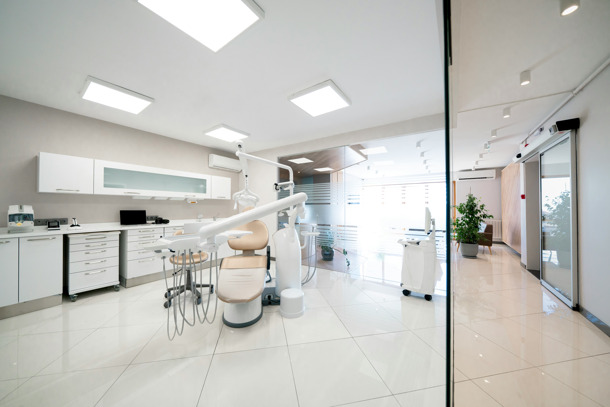

地域の皆様が安心して通える、家族みんなのための歯科医院
当院は、小さなお子さまからご年配の方まで、 どなたでも安心して通える歯科クリニックを目指しています。 単に「治療をする」のではなく、患者さんの不安を和らげ、笑顔で通えることを大切にし、 最新の設備とやさしい診療で家族みんなの健康な歯を守れるようサポートしていきます。
一般歯科
むし歯や歯周病の治療を行い、患者さんの健康な歯を守るための基本的なケア を提供します。
痛みを抑えた治療を心がけ、できるだけ歯を残す治療 を大切にしています。
むし歯の治療・詰め物・かぶせ物
歯周病の治療・歯石除去
神経の治療（根管治療）
小児歯科
お子さまの歯の健康を守るために、むし歯の予防と治療を中心に、楽しく通える歯医者 を目指しています。
初めての歯医者さんでも安心できるよう、やさしく丁寧な対応を心がけています。
乳歯のむし歯治療
シーラント（むし歯予防処置）
フッ素塗布・歯磨き指導
口腔外科
親知らずの抜歯や顎関節症など、お口の中の外科的な治療を専門的に行います。
痛みや負担の少ない治療を心がけ、患者さん一人ひとりに合わせた適切な治療 を提供します。
親知らずの抜歯
顎関節症の治療 口内炎・粘膜疾患の診療
口腔外科
「痛くなってから行く」のではなく、むし歯や歯周病を防ぐことを目的とした診療です。
定期的な検診とクリーニングで、お口の健康を長く保ちましょう。
定期検診・クリーニング（PMTC）
フッ素塗布で歯を強くする
歯周病の予防と早期発見